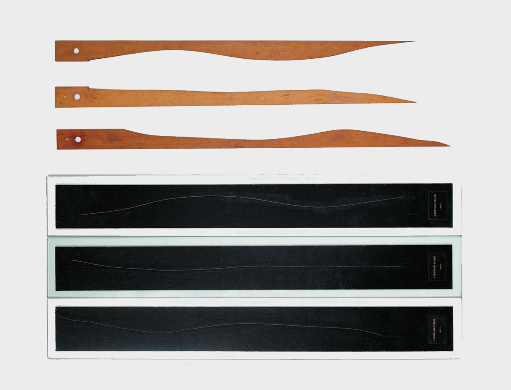

Randomness.
More specifically, how to create & control randomness using p5.js
随机性。
再确切一些，如何使用 p5.js 创造和控制随机性。
What is being measured?
How to communicate the thing being measured?
How does the user interface the devices?
测量的是什么？
被测量的东西是如何被表达的？
观众是怎样面对这些工具的？
Marcel Duchamp. 1913 – 14.
Tsching Heisch. 1980 – 81.
Adrien Segal. 2015.
Create a digital measurement device that:
Your app will have two parts:
random() Return a random number.
noise() Generates a random sequence appears more natural than random.
sin(), cos() Calculates the sine/cosine of an angle. Values are returned in the range -1 to 1.
mouseX, mouseY
mouseMoved()
mouseDragged()
mousePressed()
mouseReleased()
mouseClicked()
loadSound() p5.AudioIn loadImage() loadPixels(), updatePixels() createVideo() createCapture() second(), minute(), hour(), day(), month(), year() Rita.js